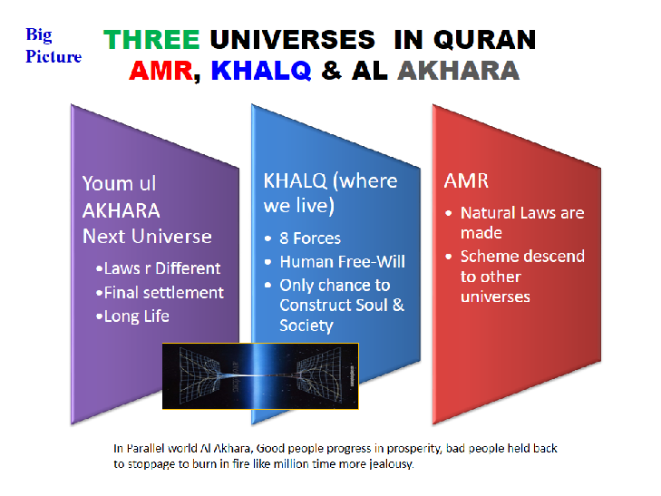
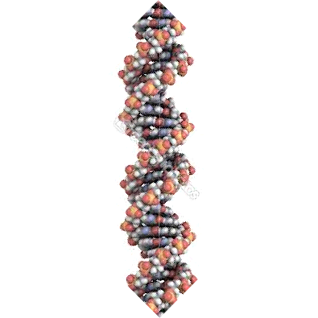
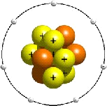
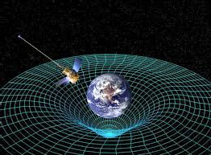
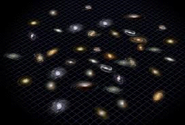
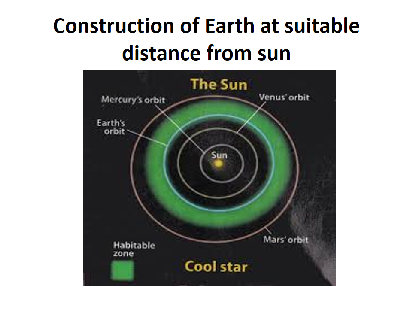
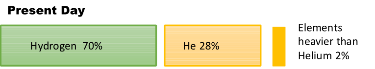

Contents
THE CONCEPT
- Importance of proper concept of God
- Concept of God as revealed in Quran
- Place of our universe in Big Picture - Allah Created universe from nothing
- Summary - Concept of God in the words of God
OMNIPOTENT
- Laws of nature as standing orders of Allah running the world
- Malaika: Include Natural Forces that control the Universe فَالْمُدَبِّرَاتِ أَمْرًا
- Does Allah Almighty Intervene Directly
- Status of Adam in the Universe
OMNIPRESENT
- Where is Allah Almighty Located?
- The Anthropic Cosmological Principle ( how the universe is designed to create Adam as its observer)
- Human meeting with God
يُولِجُ اللَّيْلَ فِي النَّهَارِ وَيُولِجُ النَّهَارَ فِي اللَّيْلِ وَسَخَّرَ الشَّمْسَ وَالْقَمَرَ كُلٌّ يَجْرِي لِأَجَلٍ مُّسَمًّى ۚ ذَٰلِكُمُ اللَّـهُ رَبُّكُمْ لَهُ الْمُلْكُ ۚ وَالَّذِينَ تَدْعُونَ مِن دُونِهِ مَا يَمْلِكُونَ مِن قِطْمِيرٍ
[35:13] He makes the night to enter into the day and makes the day to enter into the night, and He has subjected the sun and the moon, each of them running to a stated term. That is God, your Lord; to Him belongs the Kingdom; and those you call upon, apart from Him, possess not so much as the skin of a date-stone.
1- Importance of proper concept of God
Concept of God of a nation defines nations status in the world.
- The nation with religious or man made concept of God is lower in development status. Religion in advance form creates ruthless theocracy. To develop, the nation has to adopt secular means. Man made concept of God inhibits growth.
- Quranic Concept of God leads to become a developed nation with superior humanity interest. It provides incentive to the individual citizen to contribute to the welfare of society. It gives control in citizens hands to shape their future with the help of never changing laws of nature, human potentialities, material resources and freedom of choice. As a result, the nation becomes a leader in the field of technology and development (status of mankind)
Many people among Muslims believe that they have been given the proper concept of God . When they check from the Quran, they find that man made misconceptions has been added and most of the time their concept of God is not in line with the Quran.
In Religions, concept of God is larger version of human such as:
- God need human WORSHIP, is influenced by repeating & counting words
- God is physically sitting on the throne at a specific location
- God have weight and have human like hands, eyes, feelings
- God demonstrate His power by overthrowing the natural laws (show super natural events)
- Directly intervenes all the time but why not stop violence or injustices?
- Saints are GOD's deputies on earth, God listen or communicate through saints as middle man.
- God have feeling of love to a body made of atoms
- God can move from one sky to the other, God have preference for dates and timings
- Human has no free will and is bound by God to TAQDER (destiny) still God hold human accountable for actions.
- Satan is root cause of all problems. God should have not made him or allowed him to pursue all world people 24 hours to do bad things
The proper concept of God does not fit in unless the slate of mind is clear from human made pre-conceived ideas about God. Muslim's first statement starts from 'LA ILAHA' that means no god no authority that deserve to be obeyed. Once a person is out-of-the-box of human made ideas, the proper concept of God comes in and the person feel a change.
2- Concept of God as Revealed in Quran
FRAME OF REFERENCE
- Allah is maker of natural laws - not the breaker of natural laws. Natural laws can break the world but can not be broken. Natural laws, with embedded power of implementation, never change, never deviate
- Allah runs the universe with natural laws (wish of Allah)
- Allah is omnipotent & omnipresent, not a 'God of gaps and emotions'
- Satan is a source of rebellion that perfects the freedom of choice to Adam (Human)
- Allah who created & control the universe is not a personal and private God that needs worship
- Human deeds are being watched minutely by two laws; 'TheLaw of Action & Affect' and 'The law of Respite'. Our Mind interact with matter in our integrated universe. No one can escape from the watch and catch of the 'Law of Action & Affect'.
- Science discovers naturals laws and forces of nature, to put under human use. In Quran, mankind with ability to subdue natural forces is called 'Masjood e Malaik'
- Allah is above the limits of time, space and matter, not sitting at a physical throne at a finite Location
- فَاعْلَمْ أَنَّهُ لَا إِلَـٰهَ إِلَّا اللَّـهُ 47/19 You should have the firm conviction that no one except Allah wields any authority or power in this universe.
- لَيْسَ كَمِثْلِهِ شَيْءٌ ۖ وَهُوَ السَّمِيعُ الْبَصِيرُ 42/11 There cannot be any one else like Him who can do all this. There is nothing like Him. He is all-hearing, all-seeing.
Balanced Attributes of Allah. ISMAA UL HUSNAA
Life and death by his laws, Severe in punishment 2/165 and He also rushes forth with all His Bounties and Provisions for that person's redemption 2/160 All attributes appear as much as invoked or needed. No one attribute is skewed or starched. He is merciful, subduer, sustainer, compeller, all at the same time but as much as needed.
God given attributes in Quran
(please note translations are not always the primary source of information)
Rehman - Provider of emergent growth needs
Raheem - Provider of evolutionary growth needs
Rabb - Provider of nourishment needs and all needs of growth of potentials abilities
Razzak - Provider of food and other living needs
Kahhaar, Al Qahir - Dominant- Having power of punishment to criminals and wrong doers
Jabbaar - Forceful when needed to keep within laws and regulations.
Mutakkaber - possessor of ultimate powers and sovereignty
Muntakim - As per his law of cause and effect, have power to implements results to wrong deeds
Aleem - Having unlimited knowledge past present and future, hidden potentials and obvious
Al Baseer - Can see every thing even hidden in mind
Al Samih - Can hear every thing
Khabeer - aware of every thing that exist or can exist
Qudrat - God made measures for every thing to happen. These are called natural laws. Nothing can escape from God's laws
Owner of chair and throne - God have central control on the whole universe
Malik, Malakoot - having sovereignty over all universes
Giver of life and Death - it is done as per His wish which prevails in the whole universe in term of natural laws. If a murder is done by a person, the role of person is only to use her/his free will. Hand moves with power of God as per His laws, the bullet behaves as per natural laws. The person dies or is saved in hospital all within the grip of his laws.
Taqdeer - in the universe of Law making [AMR], God do what ever he intends and wish. In our universe KHALQ, Gods law come with embedded implementation power and prevails without exception. For human, human can defy rules but human can not avoid results of deeds which come as per law.
Tawakal - Full faith on God laws and rules for their results.
Wali - Friend. Whoever takes his guidance become his friend and always deserve divine help i.e. success is leveraged.
Al Hakeem. To keep matters in proper limits. Wise keeping in view all variables.
Al Haleem; Do not flare up. Free from sudden emotional reactions. Focused on principles and perfect results
Al Ghafoor - Provide divine protection and energy by obeying God guidance, to fight against destructive forces
Al Affove: - Provide time to avoid repeating the mistake and do good deeds, and hence avoid wrong results
Al Tawaab - In the period before the result catch, if a person return from wrong path and do good deeds, God provide defensive shield against wrong results.
Rauof - To remove hindrance against progress and growth of personality in a very soft and merciful way. Kind, Pitying
A Waddod - people can invoke love of God and liking of God by obeying guidance from God for optimum living.
Al Kareem;- having utmost highest qualities, bountiful
Al Birr - who broaden the avenues of life
Al Hafeez - Who protect and keep safe and sound
Al Moheemen - He protects everything in the universe from the effects of destructive forces and nothing is outside the umbrella of His guardianship.
Al Hayee - The Ever Living One - from where the life originate
Al Kayyume - Self-Subsisting - extremely stable
Awwal - Akhaer - free from bounds of time
Zahir Batin - Aware what is obvious and aware what is not obvious
Kareeb: Preent everywhere, close to human then his veins
Mujeeb: He listen and reply as in Quran, The Responsive, The Answerer
Lateef -he Subtle One - no one can see him but He is watching every one. He is too subtle and all Aware 6/104
Haseeb - For the law of cause and effect, He keep count even up to atomic particles
Shakir - He value human deeds and provide full results
Assalam - To provide full support to human personality growth to reach it at top integrity level with peace
Al Momin - provide guarantee where a person can trust God guidance 100% to archive results without risk or danger - faith on deeds laws
Al Azeem - The greatest of all, The Magnificent
Al Aziz - dominating, victorious, Over powering. complete control and authority; and He therefore has the power to take His programme to its destined goal
Mateen - whose plans are strong, The forceful one
Al Badeeh - The Originator - originator creator from nothingness
Al Khaliq - The creator from existing ingredients
Al Baari - passes it through various evolutionary stages of development so that unnecessary elements wither away,
Al Musawwir - The shaper, fashioner, the designer, it takes a particular form that distinguishes it from other things - the shaper of beauty,
Al Waseh - The vast & extensive, Who transcends the limitations of time and space, The Omnipresent, The Boundless
Al Wahaab - Who give the gifts without any return, expectation or any condition attached.
Al Ghani - He have no need for himself and He provides the requirements to the needs of all.
Al-Muġnī The Enricher, The Emancipator 9:28
Al Fataah - Open the door for victory of truth over falsehood
Al Haq - The truth and what ever come from him is also truth
Hameed - The Praised One - All Praiseworthy
Al-Māğid The Illustrious, The Magnificent Glorious
Al Basit - The Reliever, He grants (as per natural His laws)
Al Qabiz - He Withholds (as per His natural laws) The restrainer
Al-Khāfiḍ - A person can invoke humiliation from His law of cause and effect.
Ar-Rāfiʿ - A person get exalted as per His laws of C&E
Al-Muʿizz, Al Mudill A person can invoke honour or dishonour from His law of C&E
Al-ʿAdl - who disburse utmost just on merit
Aš-Šakūr- Who give ample reward for their efforts
Al Mutaal, Al-ʿAlī, Al Alaa supremely exalted, The sublime, the most high
Al-Kabīr - The great
Al-Muqīt The Nourisher
Al-Ḥasīb The Bringer of Judgment
Al-Ğalīl The Majestic
Ar-Raqīb The Watchful
Aš-Šahīd The Witness
Al-Wakīl The Trustee, The Dependable, The Advocate
Al-Qawwī The Strong
Al-Muḥṣī The Accounter, The Numberer of All 72:28, 78:29, 82:10-12
Al-Mubdiʾ The Originator, The Producer, The Initiator 10:34, 27:64, 29:19, 85:13
Al-Muʿīd The Restorer, The Reinstater Who Brings Back All 10:34, 27:64, 29:19, 85:13
Al-Wāğid The Perceiver, The Finder, The Unfailing 38:44
Al-Wāḥid The One, The Unique
Al-ʾAḥad The Unity, The Indivisible
Aṣ-Ṣamad The Eternal, The Absolute, The Self-Sufficient
Al-Ğāmi an Naasʿ The gather People 3:09
An-Nūr The Light
Al-Hādī The Guide towards a direction of completion
Al-Bāqī The Immutable, The Infinite, The Everlasting 55:27
Aṣ-Ṣabūr The Timeless, The Patient 2:153, 3:200, 103:3
Al-Quddūs : His Being is most perfect and beyond any defect
Mālik-ul-Mulk The Owner of all Sovereignty
Al-Ġaffār - The one who provide protection from bad results through Good results of deeds
Nasir - Naseer- who provide assistance and support. By following God Guidance, success is assured and leveraged.
Al Khalaaq - Creation with proper design. As human do by art and technology development
Al Waris - the owner of what exists in the universe
Human to reflect attributes of God in the personality
صِبْغَةَ اللَّـهِ ۖ وَمَنْ أَحْسَنُ مِنَ اللَّـهِ صِبْغَةً ۖ وَنَحْنُ لَهُ عَابِدُونَ
2/138 Take Allah's colour, Bring harmony with the Divine Laws, and who can give a better colour than Allah? " Say to them: "This is the way we have chosen for ourselves
To achieve integrity in personality, the human is to reflect attributes of Allah in his personality to the extent it is possible being human.
Follow Quranic Guidance
2:152 Allah the All-Mighty has said: " فَاذْكُرُونِي أَذْكُرْكُمْ وَاشْكُرُوا لِي وَلَا تَكْفُرُونِ
فَاذْكُرُونِي فَاذْكُرُونِي If you follow this Code of the Divine Laws, أَذْكُرْكُمْ Allah will safeguard your rights and grant you honor and eminence.
وَاشْكُرُوا لِي Therefore value this great gift given to you وَلَا تَكْفُرُونِ and do not let it be lost from your view.
Place of Our Universe in The Big Picture
There are three universe relevant to us that are mentioned in Quran. (1) Amr - where natural laws are made. Where God intention, design and plan exist. (2) Khalq - our universe made of space, time, forces of nature, matter and natural Laws (3) Akhera (hereafter) - the parallel world where our consciousness or soul will shoot out after physical death in current universe. 7/54, 16/12

The universe was created from absolute nothing, by special law of MASHAIYET, a non repeatable natural law.
Our space is built by God himself which is the fabric of time, space and energy. Over this space membrane, matter and fundamental forces can interact as per natural laws. Our universe is stretching with the passage of time. Earth is made as base for human as cosmos observers. All things are created in pairs. 51/47-49 Our universe is like a membrane which at the end will be rolled back as written scroll is rolled back. A new universe will be made by God after that. And God is to do this work. 21/104
God made all galaxies with stars in two stages and sent his order how they will function 41/12. Natural laws (amr) and parameters for every thing (qadr) 65/3 originate from God. Laws of nature never change, never deviate 31/43 . Forces of nature [malaika, angles] are made responsible to run the operation of universe 13/2, 11, 65/12 . Total of matter + energy is conserved in the universe. Nothing could be added and nothing could be taken out. Force of nature can not be destroyed. When one kind of force is converted into another kind of force form, it bring changes. For example in sun, strong nuclear force is converted to light & heat waves so that it could reach the earth. Ref: Universe in 6 aeons
4- Summary: Concept of God in the words of God
( Arabic, the original word of God is given as primary source of knowledge)
هُوَ اللَّـهُ الَّذِي لَا إِلَـٰهَ إِلَّا هُوَ ۖ عَالِمُ الْغَيْبِ وَالشَّهَادَةِ ۖ هُوَ الرَّحْمَـٰنُ الرَّحِيمُ ﴿٢٢﴾ هُوَ اللَّـهُ الَّذِي لَا إِلَـٰهَ إِلَّا هُوَ الْمَلِكُ الْقُدُّوسُ السَّلَامُ الْمُؤْمِنُ الْمُهَيْمِنُ الْعَزِيزُ الْجَبَّارُ الْمُتَكَبِّرُ ۚ سُبْحَانَ اللَّـهِ عَمَّا يُشْرِكُونَ ﴿٢٣﴾ هُوَ اللَّـهُ الْخَالِقُ الْبَارِئُ الْمُصَوِّرُ ۖ لَهُ الْأَسْمَاءُ الْحُسْنَىٰ ۚ يُسَبِّحُ لَهُ مَا فِي السَّمَاوَاتِ وَالْأَرْضِ ۖ وَهُوَ الْعَزِيزُ الْحَكِيمُ ﴿٢٤
59/22. And why should it not be magnificent? It is the Book of Allah, the Possessor of absolute power and authority. He has knowledge of the unseen and all that can be perceived. He provides nourishment for the development of the abilities and potentialities of everything, free of cost.
59/23. Yes all this is from Allah, besides Whom no one else enjoys any power or authority. The entire universe belongs to Him. Only His law is in force in it; and no one else's. His powers and knowledge are unlimited. His Being is most perfect and beyond any defect; and He provides nourishment for the development and completion of one's personality. He protects everything in the universe from the effects of destructive forces and nothing is outside the umbrella of His guardianship. He has complete control and authority; and He therefore has the power to take His programme to its destined goal. He has kept everything bound strictly within His Laws so that these may not disperse here and there and disturb the universal system. There is no one equal to Him; and all greatness belongs to Him. He is far above the possibility that the power and authority of any one else can be ascribed a share with Him.
59/24. Allah is the Creator of everything. Such is the pattern of His creative activity that He starts the process from its initial stage, then passes it through various evolutionary stages of development so that unnecessary elements wither away, when it finally takes a particular form that distinguishes it from other things.
The above are some of the Divine attributes. All these attributes, in their most proportionate, perfect and highest form, are concentrated in His Being. Such is His system that everything in the heavens and on earth, is busily fulfilling His designated programme. He alone is the possessor of all might; and His might is based on absolute wisdom.
اللَّـهُ لَا إِلَـٰهَ إِلَّا هُوَ الْحَيُّ الْقَيُّومُ ۚ لَا تَأْخُذُهُ سِنَةٌ وَلَا نَوْمٌ ۚ لَّهُ مَا فِي السَّمَاوَاتِ وَمَا فِي الْأَرْضِ ۗ مَن ذَا الَّذِي يَشْفَعُ عِندَهُ إِلَّا بِإِذْنِهِ ۚ يَعْلَمُ مَا بَيْنَ أَيْدِيهِمْ وَمَا خَلْفَهُمْ ۖ وَلَا يُحِيطُونَ بِشَيْءٍ مِّنْ عِلْمِهِ إِلَّا بِمَا شَاءَ ۚ وَسِعَ كُرْسِيُّهُ السَّمَاوَاتِ وَالْأَرْضَ ۖ وَلَا يَئُودُهُ حِفْظُهُمَا ۚ وَهُوَ الْعَلِيُّ الْعَظِيمُ
2/255 This order belongs to Allah Who is the sole authority in the universe; Who is Ever-Living and Self-Subsisting and Who is seized neither by slumber nor sleep. The entire universe is engaged in fulfilling His Plan. Who is there who can intercede with Him unless it be in accordance with His Laws. Allah knows the past and present of all people and no one can partake of his knowledge except through the method prescribed by Him. Allah's Authority encompasses the entire universe which He maintains untiringly. His Power extends from the lowest to the highest level of His Creation
- Laws of nature as standing orders of Allah running the world - Link to separate page
- Malaika: Include Natural Forces that control the Universe فَالْمُدَبِّرَاتِ أَمْرًا Link to separate page
- Status of Adam in the Universe - Link to separate page
- Does Allah Almighty Intervene Directly
Does God Intervene Directly - through special laws
The Universe is being run through the forces of nature which are governed by the rules which we call the natural laws. Not a single particles in the universe is out of discipline. Each force is obeying wish of Allah with absolute perfection. All forces of nature are directed in a way that they created a conscious observer in the form of The Adam. It is called Anthropic Cosmological Principle in science. The created observer is observing the universe in the live form, from the origin of time till present time.
The Anthropic principle elaborates that there are at least 40 key points in the making of matter and energy and many other points on earth including earth and moon construction, nature and placement of earth at a distance from sun, origin of water on earth. If we miss one count or deviate any count more than a narrow limit, there is no earth or life on earth as we know.
At certain points we find that these events does not appear to occur through the existing natural laws in the universe. They appear to occur from a special source of the natural laws which Quran mention as AMR. Following are occasions which we observe as Allah's special law at work.
Human cannot know the occasions where Allah's special order (masahaiet) or regular orders (natural laws of this world - KHALQ) are in action. وَلَا يُحِيطُونَ بِشَيْءٍ مِّنْ عِلْمِهِ إِلَّا بِمَا شَاءَ
Following five events appears to happen through Laws of Mashaiet or Special Law of nature. These event does not appear to be in the scope of normal natural science laws.
Event 1 Origin of energy and matter from absolute nothingness
[once created it remain preserved with absolute perfection]
Originator: [2:117] God is the Originator of the heavens and the earth. Whenever He decides to do anything, He just commands it to exist and it comes into existence.
Space Maker: 51:47 And We have built the heaven with hands (the Divine Power), and We are expanding it
Start and End of Time: [30:8] God has not created the heavens and the earth and all that is between them but to produce positive and constructive results and for a set period
Event 2 Creation of fundamental forces of nature
These forces are responsible for any change in nature. Forces determine change. As per Quran, forces that run the universe are called Malaika. These forces appeared in the first nano second of the big bang i.e. creation.
Event 3 Creation of natural laws: Procedure and discipline for the forces of nature and energy in nature
Origin and continuous stability of Natural Laws.
41:12 He then established them into seven heavens in two days, and to each heaven He sent the command of its affairs.
The above commands are natural laws in the physical world.
Natural laws are the procedures for fundamental forces to operate. Natural laws are something that exist in nature. The natural laws never under perform? Science has faith that natural laws hold in all circumstances and never fail.
Event 4 Creation of First Life Cell around 3.5 billions years ago
First life cell was made in the form of DNA, which are dust particles put in specific pattern and having programmed knowledge. The knowledge software in a life cell is so comprehensive that within 12 weeks, it converts a single cell to complete human body with a functioning great machinery which is beautifully packed inside the skin. That body is capable to reproduce within 15 years and natural death programmed in it within 115 years. (Biology is a long and most interesting topic for the pondering people)
According to Paul Davis, who is a contemporary scientist, instead of us to look into other planets for life, we need to concentrate on our 4.6 billion years old earth for a second chance of the origin of life. So far we did not find second time origin of life on earth.
Adam (human), as one of the top 'end product' of the universe, is a heap of organized dust, programmed for replication and intelligence that can decipher the code of the working of the universe; Surah 45/ayah 13. Adam have potential to subdue nature (masjood e Malaik).
The chances of origin of life in the nature are equivalent to making of a perfect new boing 747 aircraft out of a car junkyard by a tornado that pass over it.
First Life Cell – with info & Direction - Hardware & Software Replicator
Total Protons in known universe 1080
Impossible Operationally 1070,
Impossible Technically 1096
Probability of DNA formation through normal natural laws 10340,000,000
DNA cell

Event 5 Human consciousness - Free-Will
Origin and continuation of consciousness (human free will) 15/29-30 Having passed through various evolutionary stages, life, manifested itself in the form of human beings who were endowed with freedom of the will and choice (2/30).
(Satan is a source in human to give a capacity to rebel. Satan is to consummates free will by providing alternate choices)
وَيَسْأَلُونَكَ عَنِ الرُّوحِ ۖ قُلِ الرُّوحُ مِنْ أَمْرِ رَبِّي وَمَا أُوتِيتُم مِّنَ الْعِلْمِ إِلَّا قَلِيلًا
17/85 They question you about the Spirit. Say, "The Spirit is at my Lord's command, and you have been granted but little knowledge."
17/85 They ask you as to what is the nature of Roh. Tell them that it belongs to the realm of Allah's Amr which it is not possible to grasp with the scanty knowledge that human beings have.
Human consciousness (ROH) is a program of free-choice over the hardware of a human brain. Any selfish gene with the elegant law of evolution, can not dictate violence, anger, injustice, love, respect and sacrifices for others.
Event 6 Direct knowledge Revealed on Prophets
Direct knowledge revealed on prophets to optimize human efforts - to create best living societies. Prophets are chosen people by Allah for specific purpose. All prophets the present the same central idea in their own languages. The last prophet to humanity was Mohammad. The book revealed on Mohammad PBUH is safe and protected by Allah Himself. No one can change it original message.
Since the source of the universe and Quran is the same, so there is no conflict between Quran and Science is possible. Translations create problems that can be sorted out by referring to the original message of Allah in Arabic.
The nature of revelation can not be understood by human. We can prove the truth of revelation though the confirmation of science through scientific discoveries.
Why revelation?, Why Quran?, Why Religion?
God created perfect universe for human and gave free will to human. To cement the given free will, God put Satan along side Adam in human. Now human can use free choices to get work done through malaika BUT human cannot be given free hand to spoil the beautify of the universe with injustice, exploitation and violence. Man of power cannot be allowed to deprive weak person from happiness of life.
God do not snatch the free will once given, BUT God control the results against the use of free will. 'Law of cause and effects of deeds' is revealed on each nation through the media of chosen people called apostles. Apostles also provide practical example to implement the law to create optimum living society.
Central law in Quran
LAW OF CAUSE AND EFFECT
وَلِلَّـهِ مَا فِي السَّمَاوَاتِ وَمَا فِي الْأَرْضِ لِيَجْزِيَ الَّذِينَ أَسَاءُوا بِمَا عَمِلُوا وَيَجْزِيَ الَّذِينَ أَحْسَنُوا بِالْحُسْنَى
53/31 This is because everything in the heavens and on earth is continuously compiling the consequences of one's deeds; producing negative results for those creating chaos and disorder; and producing positive and pleasant results for those who lead a righteous life
LAW OF RESPITE
وَلَوْ يُؤَاخِذُ اللَّـهُ النَّاسَ بِظُلْمِهِم مَّا تَرَكَ عَلَيْهَا مِن دَابَّةٍ وَلَـٰكِن يُؤَخِّرُهُمْ إِلَىٰ أَجَلٍ مُّسَمًّى ۖ فَإِذَا جَاءَ أَجَلُهُمْ لَا يَسْتَأْخِرُونَ سَاعَةً ۖ وَلَا يَسْتَقْدِمُونَ
If Allah had seized human beings for their wrong-doings instantaneously, there would not have remained any living being on the face of the earth But the results set to delay for a set period. When that moment arrive, Results Catch: No delay for a minute, Not advanced for a second 16/61
MACHINERY FOR ACCOUNTABILITY
وَخَلَقَ اللَّـهُ السَّمَاوَاتِ وَالْأَرْضَ بِالْحَقِّ وَلِتُجْزَىٰ كُلُّ نَفْسٍ بِمَا كَسَبَتْ وَهُمْ لَا يُظْلَمُونَ
45/22 Allah has created the universe for a purpose. The purpose is that every human being is fully recompensed for what he has done; and no harm is done to anyone
وَلَا تَدْعُ مَعَ اللَّـهِ إِلَـٰهًا آخَرَ ۘ لَا إِلَـٰهَ إِلَّا هُوَ ۚ كُلُّ شَيْءٍ هَالِكٌ إِلَّا وَجْهَهُ ۚ لَهُ الْحُكْمُ وَإِلَيْهِ تُرْجَعُونَ
28/88 In plain English
Only Allah's Natural Laws: Therefore do not invite any worldly power to have a share in Divine authority. All power and authority belongs to Allah; and you have to establish the system only according to His Laws.
Natural laws never change but change every thing: Remember that man-made theories and concepts also continue changing like other things in the universe . Only the Divine guidance provided by Wahi is beyond change; and it is this guidance which will ultimately take you to the destination determined by Allah.
Natural laws are empowered to dominate: Therefore the supremacy should only be that of Allah's Laws; and all judgments should be made according to them. Your every effort and activity should revolve around this very axis, and every step you take should be in the direction of that destination. Also bear in mind that you are accountable to Him for every action. That is the everlasting way of life
1- Allah swt is above the need of location at a particular place
Allah is everywhere - interacting with mankind through fundamental forces (malaika), Procedures for fundamental forces to interact in the universe KHALQ, are called natural laws. Natural laws have in-built power for self compliance.
God is too close to human
57/4 وَهُوَ مَعَكُمْ أَيْنَ مَا كُنتُمْ ۚ وَاللَّـهُ بِمَا تَعْمَلُونَ بَصِيرٌ and He is with you wherever you are. And Allah, of what you do, is Seeing.
50/16 We are the ones who have created human beings We also know his thoughts and what transpires in his inner self. We are closer to him than his jugular vein
وَنَحْنُ أَقْرَبُ إِلَيْهِ مِنكُمْ وَلَـٰكِن لَّا تُبْصِرُونَ [56:85 And We are nearer to him than you are, but you cannot see.
God is too Subtle for human eyes to see
6/103 لَّا تُدْرِكُهُ الْأَبْصَارُ وَهُوَ يُدْرِكُ الْأَبْصَارَ ۖ وَهُوَ اللَّطِيفُ الْخَبِيرُ He cannot be comprehended by vision but He comprehends everything. He is the All-Subtle and the All-Aware.
God is present everywhere 2/115 وَلِلَّـهِ الْمَشْرِقُ وَالْمَغْرِبُ ۚ فَأَيْنَمَا تُوَلُّوا فَثَمَّ وَجْهُ اللَّـهِ ۚ إِنَّ اللَّـهَ وَاسِعٌ عَلِيمٌ
To God belong the East and the West. Whichever way you turn, there is God's presence. God is Omnipresent and Omniscient.
Physical form of God is above human thinking capacity
23/91 سُبْحَانَ اللَّـهِ عَمَّا يَصِفُونَ Allah is far above, and free of, whatever concept they have or describe
God as observer in our discussion
58/7 أَلَمْ تَرَ أَنَّ اللَّـهَ يَعْلَمُ مَا فِي السَّمَاوَاتِ وَمَا فِي الْأَرْضِ ۖ مَا يَكُونُ مِن نَّجْوَىٰ ثَلَاثَةٍ إِلَّا هُوَ رَابِعُهُمْ وَلَا خَمْسَةٍ إِلَّا هُوَ سَادِسُهُمْ وَلَا أَدْنَىٰ مِن ذَٰلِكَ وَلَا أَكْثَرَ إِلَّا هُوَ مَعَهُمْ أَيْنَ مَا كَانُوا ۖ ثُمَّ يُنَبِّئُهُم بِمَا عَمِلُوا يَوْمَ الْقِيَامَةِ ۚ إِنَّ اللَّـهَ بِكُلِّ شَيْءٍ عَلِيمٌ
58/7: O listener! Did you not see that Allah knows all whatever is in the heavens and all whatever is in the earth? Wherever there is any discussion among three He is the fourth present with them, and among five He is the sixth, and there is no discussion among fewer or more except that He is with them wherever they may be; and then on the Day of Resurrection He will inform them of all what they did; indeed Allah knows all things.
God Know what is in our mind
قُلْ إِن تُخْفُوا مَا فِي صُدُورِكُمْ أَوْ تُبْدُوهُ يَعْلَمْهُ اللَّـهُ ۗ وَيَعْلَمُ مَا فِي السَّمَاوَاتِ وَمَا فِي الْأَرْضِ ۗ وَاللَّـهُ عَلَىٰ كُلِّ شَيْءٍ قَدِيرٌ
3/28 Say, "God knows everything that is in your heart, whether you conceal it or reveal it; He knows everything that the heavens and earth contain; God has power over all things."
There exist no law other than naturals laws of God
وَيَعْبُدُونَ مِن دُونِ اللَّـهِ مَا لَا يَضُرُّهُمْ وَلَا يَنفَعُهُمْ وَيَقُولُونَ هَـٰؤُلَاءِ شُفَعَاؤُنَا عِندَ اللَّـهِ ۚ قُلْ أَتُنَبِّئُونَ اللَّـهَ بِمَا لَا يَعْلَمُ فِي السَّمَاوَاتِ وَلَا فِي الْأَرْضِ ۚ سُبْحَانَهُ وَتَعَالَىٰ عَمَّا يُشْرِكُونَ
(10/18) They have taken as objects of worship that which can neither help them nor harm them, and say: "These are our intercessors before God." Say to them: "Do you think that Allah is unaware of what you desire to communicate through such objects as have no knowledge of anything in the heaven and the earth? Allah is far above those whom they set up as His peers
2- The Anthropic Cosmological Principle: - It scientifically explained how Universe was designed to create ADAM
Let us have a look at the Time Line and ingredient of universe as per science
- Universe is 13.72 Billion Years old. Amazing work but no observer.
- 10 Billions years ago, Population III stars started making carbon, a central ingredient to life
- 5 billions years ago, Population II stars cooked and thrown out earth elements
- Observer arrived on earth around 300,000 years ago.
- First glimpse to the universe beyond our Milky Way Galaxy, 84 years ago.
- Live History of the universe, from 13.2 Billion Years ago till today, is being shown to the observer 1998 onward
- Live History with minute details, from 12.7 Billion years till today, will be available to human in the near future from 2020 on ward
Matter Components
Proton & Neutron consisting of gluons and 3 pairs of quarks
Electron three pairs. (Anti electron or positron also have three pairs)
Higgs Boson field that provide mass to matter.
Our universe have four dimensions
(1) Time (Space); (2) fore/back, (3) right/left, (4) up/down
If space has 2 dimension or 4 or more dimensions, the orbits are unstable. No life.
Following are 9 Anthropic Cosmological critical values out of many
I. Universe is basically made of:
Fundamental Forces in nature
وَالْمَلَكُ عَلَىٰ أَرْجَائِهَا ۚ وَيَحْمِلُ عَرْشَ رَبِّكَ فَوْقَهُمْ يَوْمَئِذٍ ثَمَانِيَةٌ
8 Forces of nature to maintain universe (Quran )
4 forces out of 8 are so far discovered by human;
Electromagnetic Acts through Photon in the form of heat and light waves - Range unlimited
Gravity (space curvature push by Einstein, Graviton by string theory)
Strong Nuclear Force - Gluons,
Weak Nuclear Force - W, Z Bosons
II. Proton Neutron Mass Ratio
- If proton 0.2% Heavier, No stable atom
- If Neutron slightly lighter, Neutron not bound in Nuclei. No heavy element no life
III. Strong Nuclear Force have critical strength - which can hold particles such as protons together inside the nucleus of an Atom
Range 0.1 Millionth of a cm – radius of nucleolus
- If 1% weaker, no proton stay in nucleus, no atom other that Hydrogen, no earth no life
- If 1% stronger, all element lighter than iron would be rare. No carbon no oxygen no life
Figure shows structure of a proton made of three quarks; two up and one down
IV. Weak Nuclear Force - In sun, it help to release strong nuclear force in the form of the sun's heat & light energy
Force action range: 0.01 Millionth of a cm – the radius of a nucleolus
Weak Nuclear Force convert 2 proton to 2 neutron to make Helium + Sun energy. Because it is relatively weak, so it slows down the formation of Helium in the sun and thus enhance the sun life steady for 10 Billion years to give chance to evolve life
V. Electromagnetic Force – Self Limiting Force - that bind electrons around a nucleus
- If stronger; Proton will blow out of atomic nucleolus - Electrons will not bond with other atoms, no molecules, no matter, no earth
- If Weaker, than no electrons held in orbit. No molecule, no atom, no material.
Relative strength: Gravity Force = 1 Electromagnetic force = 1039

VI. Gravity – Self Amplifying Force
Gravity; self amplifying, increases with accumulation of matter, Electro Self limiting, positive and negative always cancelling each other
- If stronger, stars burn too fast, burn more fuel, die younger, Sun life too short to give chance to evolve life
- If lower than stars would not ignite, so not shine.h

VII. Universe is expanding with acceleration by time وَالسَّمَاءَ بَنَيْنَاهَا بِأَيْدٍ وَإِنَّا لَمُوسِعُون
Universe Extreme Fine Tuning to The Dark energy or Energy of vacuum
- The measured / observed value of dark energy is 120 power of ten less than its calculated value, for reason that remain completely mysterious.
- 10-120 The chance of this fine tuning is like a coin flipping and getting not less than 400 heads in a row
- If fine tuning is more say 121, The universe will fly apart too fast to galaxies to form. No life.

VIII. Construction of Earth at suitable distance from sun
If the planet earth is 1% closer than the existing distance from sun, the oceans will boil.
If the earth is placed at 5% more distance than the existing distance, every thing on earth will freeze.

IX. Weak Nuclear Force fine tuned
Right after big bang, the composition of gases were:
Weak Nuclear Force
If weaker, more neutron, Hydrogen turn to He: no star, no water
If stronger Less neutron less helium, less carbon made in stars no life.
If stronger Star not explode to spread carbon and heavy elements; no earth no human

It also indicate the time has a start and an end
3- Human Meeting with Allah لَعَلَّكُم بِلِقَاءِ رَبِّكُمْ تُوقِنُونَ
Through close scientific observation human see Allah marvels like foot prints
اللَّـهُ الَّذِي رَفَعَ السَّمَاوَاتِ بِغَيْرِ عَمَدٍ تَرَوْنَهَا ۖ ثُمَّ اسْتَوَىٰ عَلَى الْعَرْشِ ۖ وَسَخَّرَ الشَّمْسَ وَالْقَمَرَ ۖ كُلٌّ يَجْرِي لِأَجَلٍ مُّسَمًّى ۚ يُدَبِّرُ الْأَمْرَ يُفَصِّلُ الْآيَاتِ لَعَلَّكُم بِلِقَاءِ رَبِّكُمْ تُوقِنُونَ
(13:2) 13:2 Allah is He who raised up the skies without pillars you can see, then He sat Himself upon the Throne. He subjected the sun and the moon, each one running for a set period. He regulate the affaires. He has given clear signs; so that you may believe with certainty in the encounter with your Lord, the Nourisher. (note, you need to ponder in our current universe to meet with the nourishment provider. The Words 'youm ul akhera or Kiyamat' is not in the verse so we must not assume or add or pre-conceive)
Statement of Steve Hawking?
But the discovery relatively recently of the extreme fine tuning of so many of the laws of nature could lead at least some of us come back to the old idea that this grand design is the work of some grand designer.
What we can make of these coincidences. Luck in the precise form and nature of fundamental physical law is a different kind of luck we find in environmental factors. It cannot so easily explained, and has far deeper physical and philosophical implications.
Our universe and its laws appear to have a design that both is tailor-made to support us and, if we are to exist, leaves little room for alteration. That is not easily explained, and raises a natural question of why it is that way.
People of Understanding 3:190 أُولِي الْأَلْبَابِ
إِنَّ فِي خَلْقِ السَّمَاوَاتِ وَالْأَرْضِ وَاخْتِلَافِ اللَّيْلِ وَالنَّهَارِ لَآيَاتٍ لِّأُولِي الْأَلْبَابِ
In the creation of the earth and the heavens and the alternation of night and day, there are signs for those gifted with understanding
الَّذِينَ يَذْكُرُونَ اللَّـهَ قِيَامًا وَقُعُودًا وَعَلَىٰ جُنُوبِهِمْ وَيَتَفَكَّرُونَ فِي خَلْقِ السَّمَاوَاتِ وَالْأَرْضِ
These people keep Allah in mind whilst standing, sitting or reclining. After reflecting upon the creation of the heavens and the earth
رَبَّنَا مَا خَلَقْتَ هَـٰذَا بَاطِلًا سُبْحَانَكَ فَقِنَا عَذَابَ النَّارِ
Our Sustainer, you have not created this Universe without purpose. Glory to you. Save us from punishment of fire
Why Scientists do not accept man-made concept of God:
Because Scientist see what other people can not see
What scientist has seen in the universe, Man-made Religions could not deliver that. Scientist can see the foot prints of God around them every where. True concept of God is available only in Quran if Quran is approached with un-preconceived mind set
What Scientists Say
Fred Hoyles Ref; The Goldilocks Enigma Why is the universe Just right for life? By Paul Davies.
To permit life in at least one place in the universe, three very basic requirements must be satisfied:
- The laws of physics should permit stable complex structures to form
- The universe should posses the sort of substance such as carbon, that biology uses
- An appropriate setting must exist in which the vital components come together in the appropriate way.
Even these three requirements impose very stringent restrictions on physics and cosmology, so stringent that it strikes some scientist as nothing short of a fix – "a put-up job"
Coincidence that level of cancellation is 119 power of ten! After all just happened by chance to what is needed to bring about a universe fit for life. How much chance can we buy in scientific explanations. If it is just a coincidence …the level of flukiness seems too much to swallow
God Law of evolution
Quran Sura 13 Ayat 39 Allah effaces what He will, and establishes what He will - [Gods will is manifest in the form of natural laws], and with Him is the source of ordinance
There is constant tussle between creative and destructive forces. The constructive forces of truth continue overcoming the negative and destructive forces of falsehood, until such time that the latter has been crushed and withers away. Time period involved may be say 1,000 by human count or say 50,000 years by human count 70/4.
By conforming Allah 's guidance, human personality become broadened 2/286
لَا يُكَلِّفُ اللَّـهُ نَفْسًا إِلَّا وُسْعَهَا ۚ لَهَا مَا كَسَبَتْ وَعَلَيْهَا مَا اكْتَسَبَت
By obeying these Laws, the human personality is broadened . Whatever is done keeping in mind ones own interest as well as the interest of others, helps to develop ones personality, whereas whatever is done simply for one's own interest retards its development.
God has no son
23/91 Allah has not begotten any offspring . There has never been a deity besides Him . Tell them that had it been so, each god would surely have stood apart from the others. Along with their creations they would surely have tried to overrun one another. Anyway Allah is far above, and free of, whatever concept they have about such gods.
9/31 They have taken their rabbis and their priests as lords instead of God, as well as the Messiah son of Mary. Although they were commanded to worship none but The One God. There is no god except He. Glory be to Him; High above what they associate with Him
Big clash if there are two Gods
21/22. If there had been a sovereign other than Allah the entire system of the universe would have run into chaos. Allah, Who is the Supreme Authority, has kept in His own hands the central control of the universal sustainer. He is far above what human beings may devise about Him in their own minds